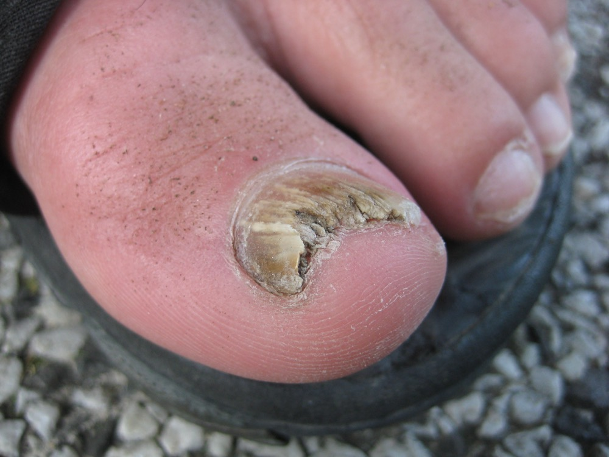
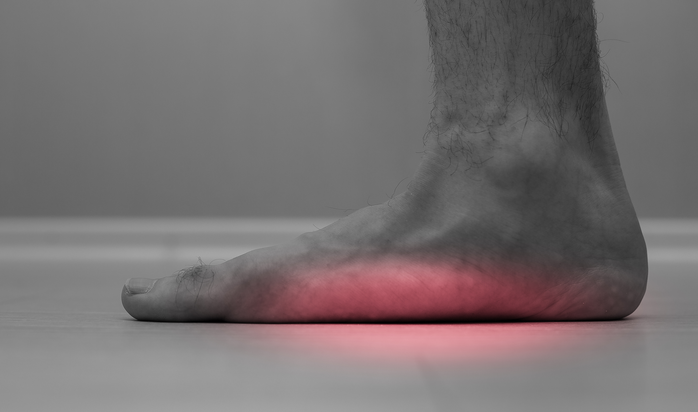
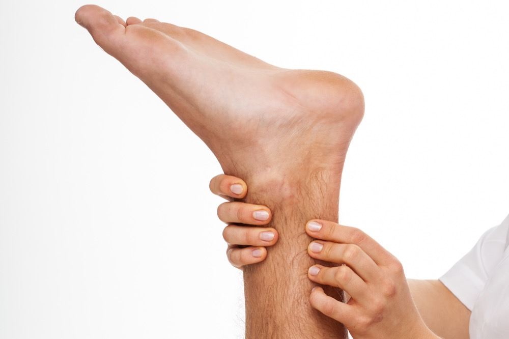
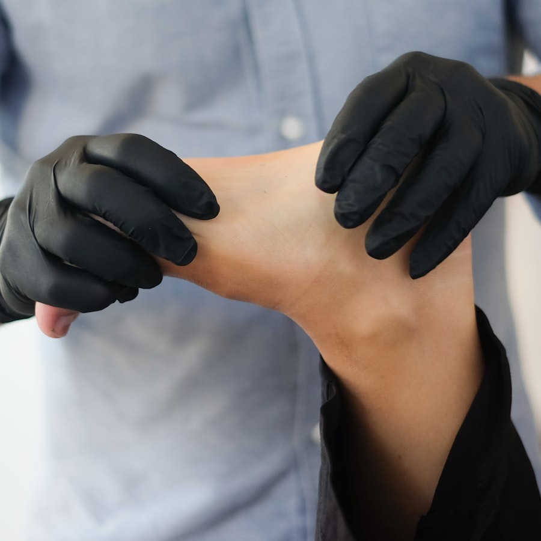

Heel Pain
Plantar fasciitis, heel spurs, and chronic pain that won't heal — we've helped thousands get back on their feet.
Learn more →Click or tap the part of the foot or ankle that's bothering you. We'll take you straight to what's likely causing it — and how we treat it.
Not sure what you're looking at? Browse every condition we treat or book an appointment and we'll sort it out together.
Same-day appointments for emergencies — ingrown toenails, sprains, fractures & more. Ask how to use your HSA for HOKAs.
Whether it's heel pain that won't quit or an injury sidelining your weekend hikes, we have the experience and the tools to fix it.
Plantar fasciitis, heel spurs, and chronic pain that won't heal — we've helped thousands get back on their feet.
Learn more →
Modern bunion correction with Lapiplasty — straighter alignment, faster recovery, lasting relief.
Learn more →
Sprains, fractures, and Achilles issues — we'll get you cleared to return to the trail, court, or field.
Learn more →
Ingrown nails, fungus removal, and warts treated quickly with comfortable, in-office procedures.
Learn more →
Custom orthotics built for your gait and your lifestyle — supportive without sacrificing performance.
Learn more →
From tendonitis to ruptures, we use the latest minimally-invasive techniques for a stronger comeback.
Learn more →
Healthy feet start with a visit to a specialist who actually listens. From the slightest discomfort to unbearable pain, we're here to identify the source and recommend the best plan for the best outcome.
The more you understand about your foot health, the better we can serve you. We use the latest treatment techniques and procedures—and we explain them in plain English.
Stay in motion. Our patients trust ARYSE braces for everyday support and serious athletic protection — engineered to move with you, not against you.
at checkout for our team discount
Shop Braces & OrthoticsA clinic specifically for diabetic foot care. From routine check-ins to advanced limb-salvage care, our dedicated team protects what keeps you mobile.
Visit Wasatch CAPBoard-certified, fellowship-trained, and rooted right here in Utah. We treat our patients like neighbors — because most of them are.
Request an appointment online, or call the location nearest you. Same-day appointments available for emergencies.